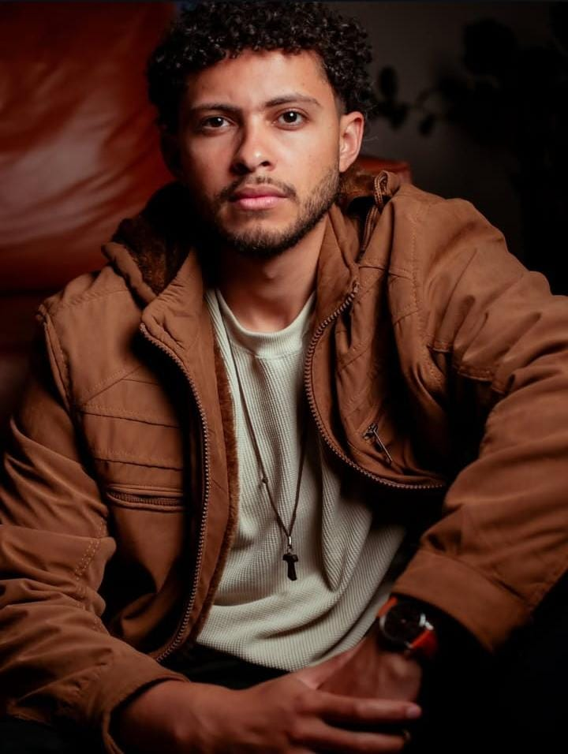
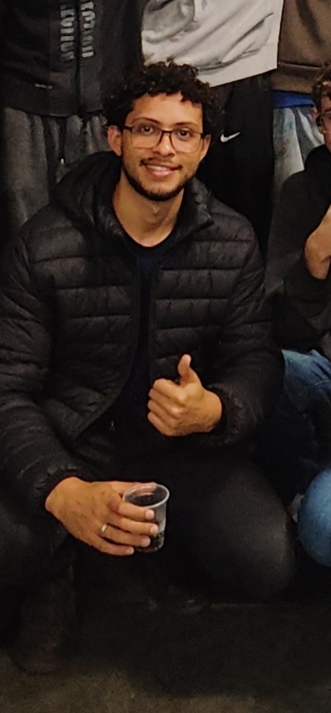

Rosto e colar em detalhe
OBSERVANDO
BOXING QUIZ ARCADE · PRÉVIA DE ARTE
Novos sprites baseados nas fotografias. Esta página é independente do jogo; a versão em combate e a spritesheet antiga permanecem preservadas.
Selecione uma animação para ampliar rosto, cabelo, óculos, barba e colar. Pause e use as setas para examinar cada quadro.
Carregando os três arquivos PNG…
OBSERVANDO
Professor a 171 px de referência e BOT original a 180 px. Nenhum sprite do lutador é alterado.

professor_ref_01.png
professor_ref_02.png